Wheel
A circular musical surface for pitch, harmony, interval movement, and colour.
SLIDE is a musical instrument that listens.
It transforms live sound into a visual map of music, allowing you to hear, see and interact with harmony in real time.
SLIDE layouts across iPad and iPhone.
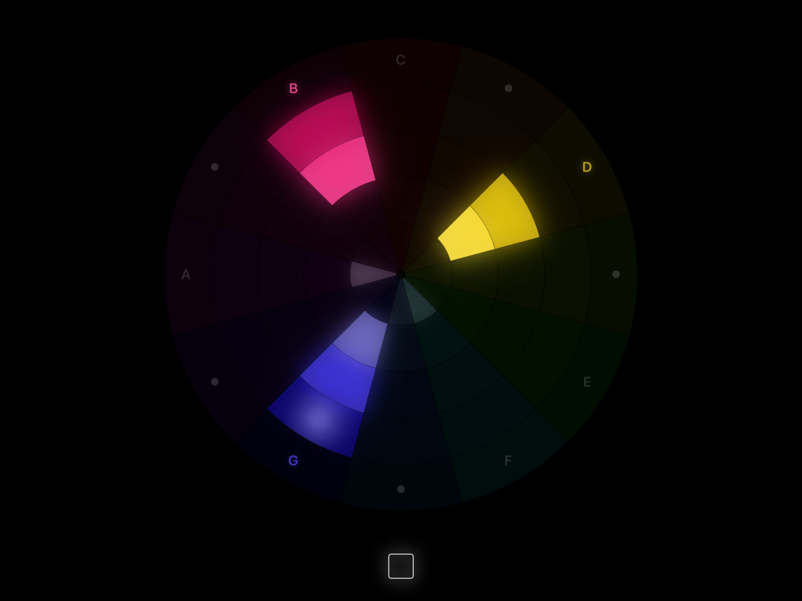
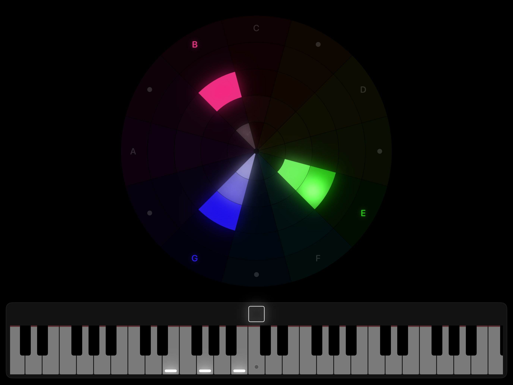
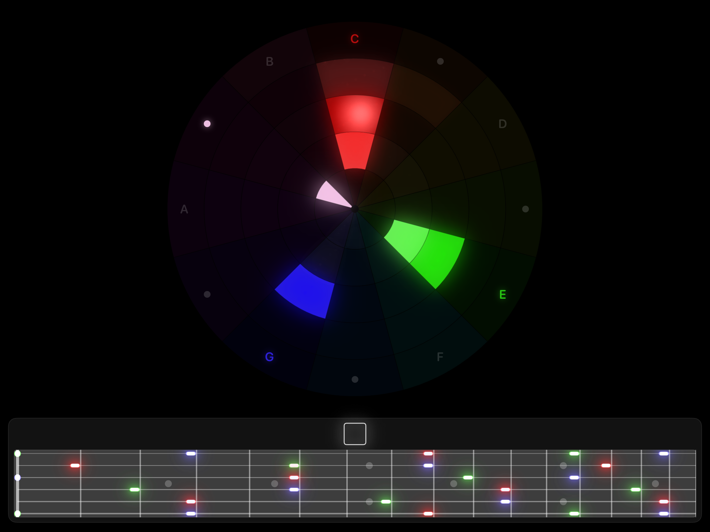
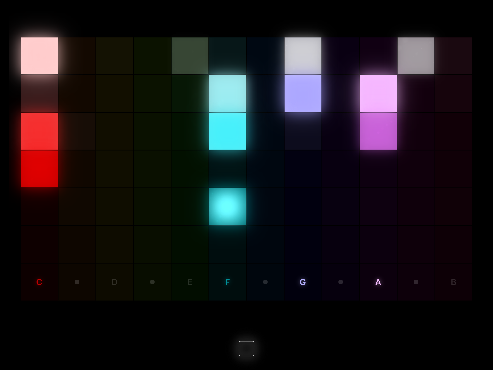
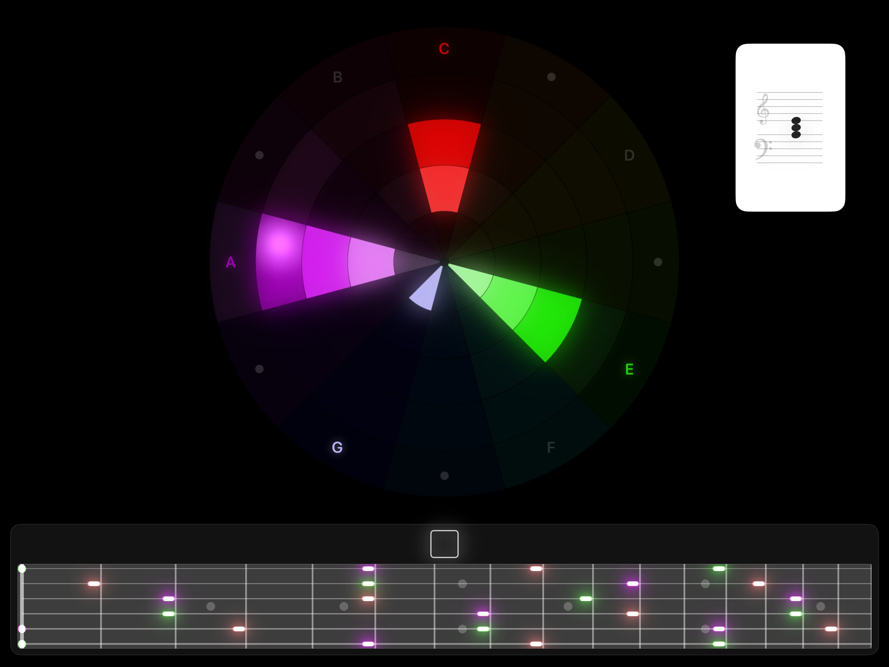
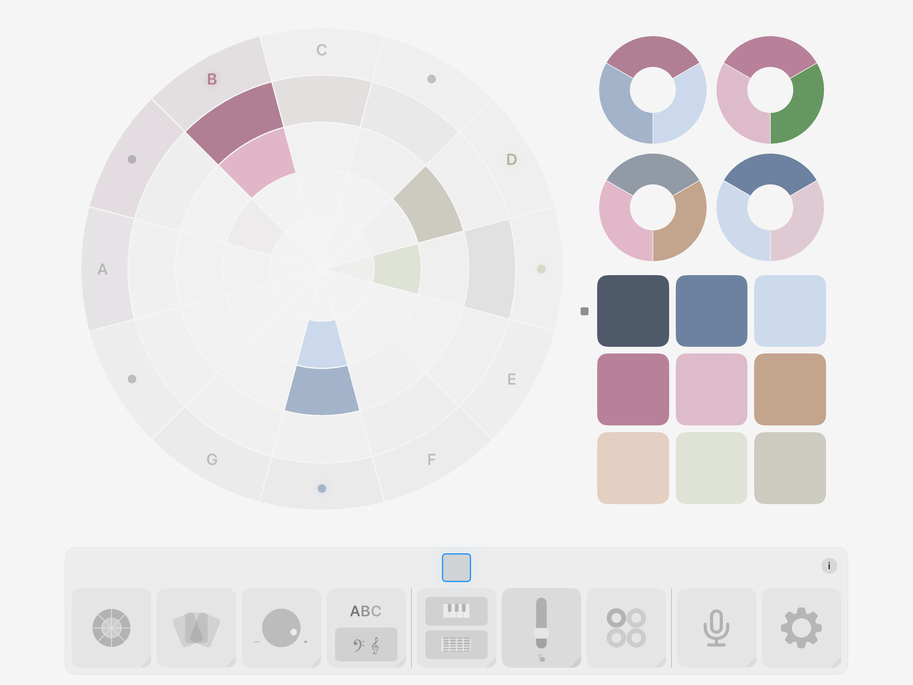
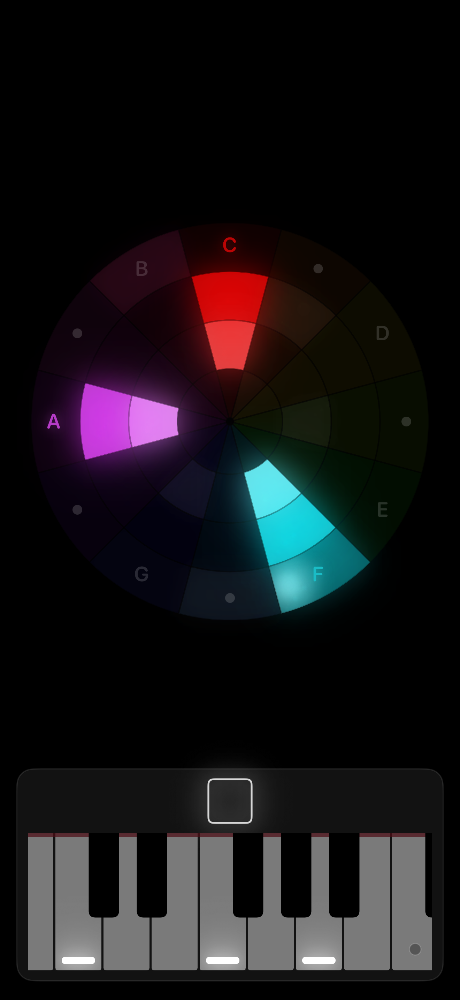
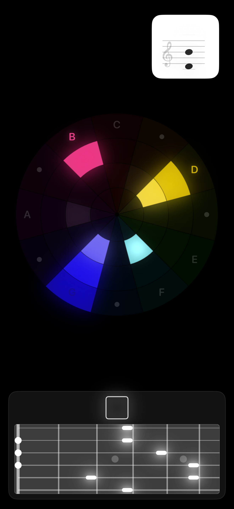
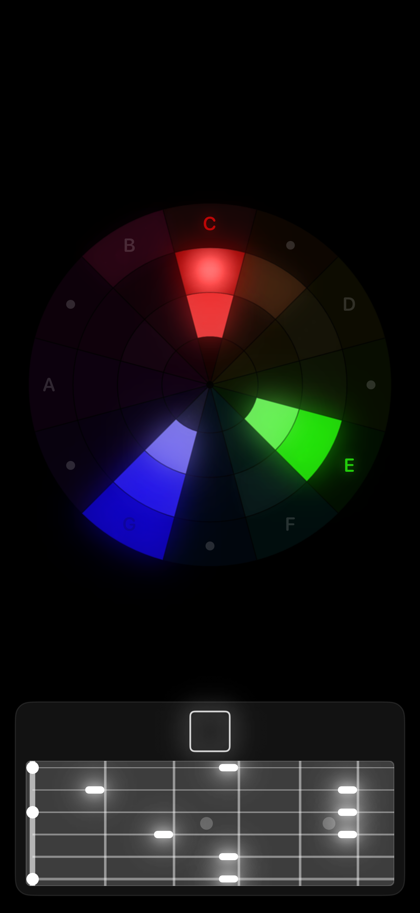
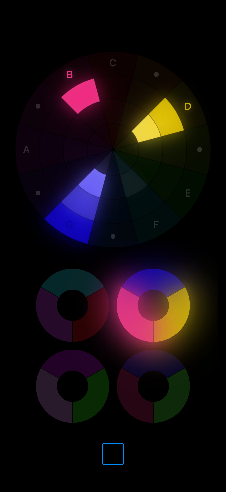
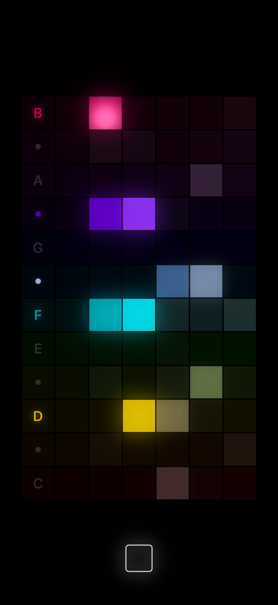
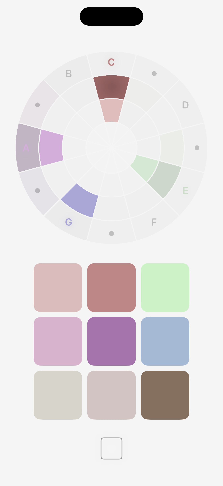
At the heart of SLIDE is the Colour Wheel.
Every note occupies its own position on the wheel, creating a consistent map of musical space. As music changes, colours move and combine to reveal harmonic patterns that are often difficult to recognise by ear alone.
The wheel isn't simply a display. It's also a playable musical surface. Touch any colour to perform notes, build harmonies and experiment with musical ideas. Listening and playing become part of the same experience.
SLIDE lets you experience music as both sound and structure.
A circular musical surface for pitch, harmony, interval movement, and colour.
A wide harmonic map designed for fast visual scanning and performance.
Use pads for melody and rings for chords, capturing musical moments into simple touch layouts.
Hold a moment in sound, then return to it while playing or listening.
SLIDE helps make music easier to understand because you can see what you are hearing.
Watch melodies travel across the wheel. See chords form and dissolve. Discover how keys relate to one another. Explore scales, intervals and harmony while listening to your favourite music.
Rather than replacing traditional music theory, SLIDE gives it a visual form that can be explored naturally through curiosity and play.
Whether you're a complete beginner or an experienced musician, it offers a new perspective on how music is constructed.
SLIDE listens through your device's microphone, so it works with almost any sound source.
Play along with streaming services, YouTube videos, vinyl records, live performances, acoustic instruments or your own voice. No special setup is required.
Because it responds in real time, every performance becomes something you can both hear and see.
SLIDE isn't only for listening.
Use the Colour Wheel, keyboard and other musical surfaces to experiment with harmony, discover new chord ideas and develop melodies. Capture musical moments visually, explore alternative voicings and find inspiration by interacting directly with colour.
Many musicians find that seeing harmony opens creative pathways that are difficult to discover through notation alone.
SLIDE works naturally alongside your existing workflow.
Keep it open next to your DAW while composing, recording or mixing. Let it reveal harmonic movement as you work, explore arrangements visually or use it as a live reference while performing.
It works with any MIDI input, and it can also act as a MIDI instrument itself, sending notes from your interactions in SLIDE to a DAW or external instrument.
Because it listens to any audio and speaks MIDI, it fits naturally into almost any creative environment without needing complicated routing or preparation.
SLIDE includes multiple interactive ways to experience music, including the Colour Wheel, keyboard, guitar fretboard, stave notation and performance views.
Every view presents the same musical information from a different perspective, allowing you to move effortlessly between hearing, seeing and playing.
There are no lessons to complete and no right way to use it.
However you choose to use it, SLIDE invites you to experience music in a completely new way.
Music has always been something we hear. SLIDE lets you hear it, see it and play with it at the same time.
No. SLIDE can also be played entirely by touch or MIDI.
No. Audio is processed live on device.
Yes. SLIDE supports external MIDI controllers.
SLIDE only uses microphone input when enabled by the user. Audio is processed live on device to create visual and musical responses.
SLIDE does not require an account and does not sell personal data.